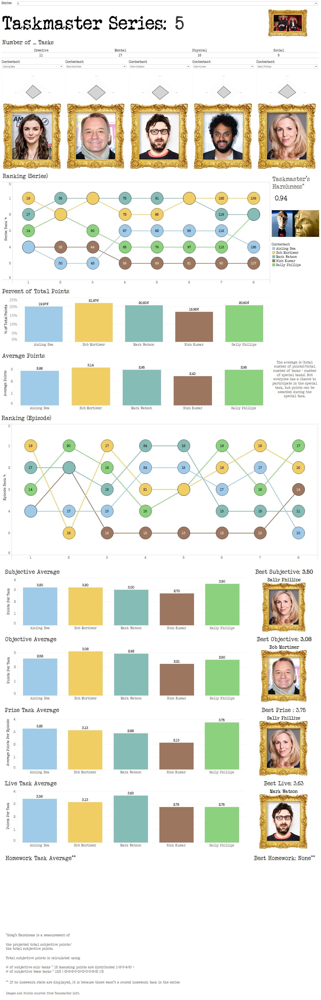
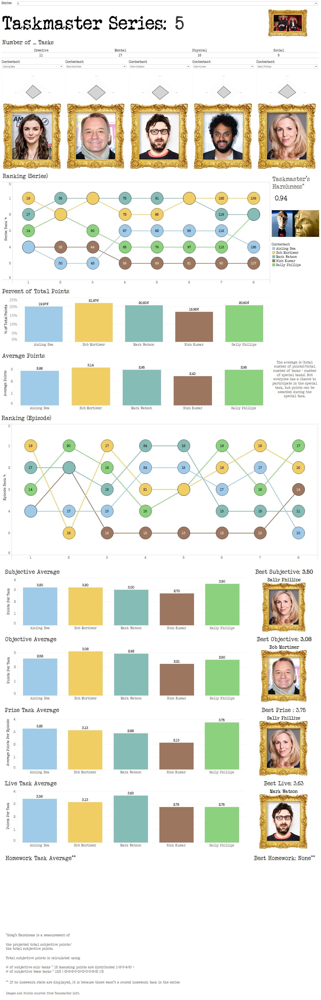

Iris Lew

I am
- a critical thinker who uses a data-driven approach to guide decision making
- a translator of complex technical information into best practices and documentation
- adept at identifying a high-quality solution that stays within the budget and meets client needs
- an independent, innovative project manager who consistently leads the team to deliver actionable insights before deadlines
- a flexible creator who can design and deploy production-ready advanced models
Title
Description
External Links
Taskmaster Dashboard
Taskmaster is a British panel show I started watching in 2020. Throughout each series of the show, five contestants will complete tasks
and judged based by the Taskmaster, Greg Davies. Fans of the show have diligently compiled the number of the points awarded to each contestant,
the type of tasks completed, any mistakes made, and more. This gives me all sorts of numbers and statistics I could then visualize in a dashboard,
including seeing if there are any key performance indicators (KPIs) that may impact their overall scores.
I sourced the Taskmaster wiki for the points each contestant earned for which tasks and created my own spreadsheets. I wanted the spreadsheets to be "raw data" and most of the data cleaning and calculations to be done with Tableau. Other people have created their own spreadsheets, but I found that most of the spreadsheets don't include the calculations done for other series of the Taskmaster franchise (e.g., Taskmaster NZ, Kongen Befaler); I wanted the calculations applied to all series, rather than just the original UK version. I referenced Jack Bernhardt's spreadsheet for the calculations and to double-check my work.
At the end of it all, I was able to engage with a TV series I enjoyed more because I was able to visualize the data rather than just seeing them as numbers. The points are meaningless, but I was able to create radar graphs, bump charts, and bar graphs. I could use parameters to filter out for the highest score of each category and which contestant achieved that score. If you would like to interact with the published dashboard, you can click on "Tableau" over on the right. Unfortunately, when I publish to Tableau Public, not all the formatting carried over.
Next Steps: Create worksheets that compare across series and across franchises.

Software: Tableau
I sourced the Taskmaster wiki for the points each contestant earned for which tasks and created my own spreadsheets. I wanted the spreadsheets to be "raw data" and most of the data cleaning and calculations to be done with Tableau. Other people have created their own spreadsheets, but I found that most of the spreadsheets don't include the calculations done for other series of the Taskmaster franchise (e.g., Taskmaster NZ, Kongen Befaler); I wanted the calculations applied to all series, rather than just the original UK version. I referenced Jack Bernhardt's spreadsheet for the calculations and to double-check my work.
At the end of it all, I was able to engage with a TV series I enjoyed more because I was able to visualize the data rather than just seeing them as numbers. The points are meaningless, but I was able to create radar graphs, bump charts, and bar graphs. I could use parameters to filter out for the highest score of each category and which contestant achieved that score. If you would like to interact with the published dashboard, you can click on "Tableau" over on the right. Unfortunately, when I publish to Tableau Public, not all the formatting carried over.
Next Steps: Create worksheets that compare across series and across franchises.

×

Taskmaster Dashboard
Software: Tableau
Automatic Essay Scoring
Automatic essay scoring (AES) is a machine learning problem where essays are parsed through
a machine learning model and a score is assigned. Since a score is assigned by a machine, it must
be unbiased...right? I explore the performance of a BERT-base-cased model that is fine-tuned on
student essays and the predicted scores of two different datasets. Furthermore, I test the performance
of the model and whether it will vary based on prompt.
I use two datasets: the ASAP-AES (train only) dataset and ELLIPSE corpus. The ASAP-AES dataset is assumed to be composed of essays that are written by students in general, but the ELLIPSE corpus contains essays that are specifically written by English Language Learners (ELLs).
There are problems with using two different datasets. The first is that both datasets use different scores. As the goal of this project is to see if there is any differences in the predicted scores, it should be sufficient to look at the distribution when comparing. The second is that the ASAP-AES dataset doesn't have consistent scoring criteria amongst its own sets.
I played around with the training and test data to see what happens when I add more and more ASAP-AES essay sets into the training data and using the other sets as a test set. This is to mimic what would happen if the structure of an essay is the same, but the prompt changes from year to year. The accuracy of the ASAP-AES test set increases with more essays, but only if the scoring criteria doesn't change drastically. Once the scoring criteria changes, especially with Sets 6 and 7, the model fails to predict any ASAP-AES scores. When all the sets were mixed together and 10% was reserved for the test set, I have an accuracy of about 57.7%.
Generally, the ELLIPSE Corpus received a higher predicted score than the ASAP-AES essays so it doesn't seem to be biased against ELLs. Even when the ASAP-AES training data was varied, the predictions on the ELLIPSE test data was generally the same, but the only model which has a mixture of all 8 sets as part of the training data (only 90% of the ASAP-AES set) was able to predict scores higher than 20. This shows how much the model depends on the training data it is fine-tuned on and the failures of interpreting the scores outputted (i.e., the same essay can receive a score of 4 or 10 and it's not clear why it's different other than the training data).
While building this, I followed a guide and adapted most of the code from the guide for use in AES_2_model_no_custom.ipynb and AES_3_model_set_order.ipynb.
Update (Feb 3, 2025): I updated to include notebooks where I developed a smooth version of a quadratic weighted kappa loss function and use it in the model. Unfortunately, the model is overfitting and memorizing the predictions.
Next Steps: Update the notebooks to use a quadratic weighted kappa as a metric rather than accuracy. Fix the smooth quadratic weighted kappa function.
Language: Python
Python Libraries: NumPy, Pandas, PyTorch, PIL, wordcloud, transformers, MatPlotLib, Seaborn, scikit-learn, transformers, time, datetime, SciPy
Architecture: PyTorch
Statistics: Large Language Model
I use two datasets: the ASAP-AES (train only) dataset and ELLIPSE corpus. The ASAP-AES dataset is assumed to be composed of essays that are written by students in general, but the ELLIPSE corpus contains essays that are specifically written by English Language Learners (ELLs).
There are problems with using two different datasets. The first is that both datasets use different scores. As the goal of this project is to see if there is any differences in the predicted scores, it should be sufficient to look at the distribution when comparing. The second is that the ASAP-AES dataset doesn't have consistent scoring criteria amongst its own sets.
I played around with the training and test data to see what happens when I add more and more ASAP-AES essay sets into the training data and using the other sets as a test set. This is to mimic what would happen if the structure of an essay is the same, but the prompt changes from year to year. The accuracy of the ASAP-AES test set increases with more essays, but only if the scoring criteria doesn't change drastically. Once the scoring criteria changes, especially with Sets 6 and 7, the model fails to predict any ASAP-AES scores. When all the sets were mixed together and 10% was reserved for the test set, I have an accuracy of about 57.7%.
Generally, the ELLIPSE Corpus received a higher predicted score than the ASAP-AES essays so it doesn't seem to be biased against ELLs. Even when the ASAP-AES training data was varied, the predictions on the ELLIPSE test data was generally the same, but the only model which has a mixture of all 8 sets as part of the training data (only 90% of the ASAP-AES set) was able to predict scores higher than 20. This shows how much the model depends on the training data it is fine-tuned on and the failures of interpreting the scores outputted (i.e., the same essay can receive a score of 4 or 10 and it's not clear why it's different other than the training data).
While building this, I followed a guide and adapted most of the code from the guide for use in AES_2_model_no_custom.ipynb and AES_3_model_set_order.ipynb.
Update (Feb 3, 2025): I updated to include notebooks where I developed a smooth version of a quadratic weighted kappa loss function and use it in the model. Unfortunately, the model is overfitting and memorizing the predictions.
Next Steps: Update the notebooks to use a quadratic weighted kappa as a metric rather than accuracy. Fix the smooth quadratic weighted kappa function.
Language: Python
Python Libraries: NumPy, Pandas, PyTorch, PIL, wordcloud, transformers, MatPlotLib, Seaborn, scikit-learn, transformers, time, datetime, SciPy
Architecture: PyTorch
Statistics: Large Language Model
Identifying Bad Datasets
Online forums recognize that they are a treasure trove for data mining as their data is used to train models,
and companies have taken to paywalling API access to them, most notably Reddit and X (formerly Twitter).
So why is training data valuable? I dive into what happens to a model when it attempts to answer a
particular question where the training data isn't the best, but is publicly available. It is also a lesson
in critical thinking with data, and why we can't take promises at their face value.
I use two wildfire datasets taken from Kaggle in this write up. I find that using the first dataset to create a neural net model isn't truly predicting wildfires despite its ~90% accuracy and instead likely predicting urbanism. The second dataset is a wildfire dataset that contains a lot information on the fires, where they occurred, how large they were, how long it burned for, and more. I recognized that it was likely more useful than the first in predicting wildfires, but there was no specific "outline" for how to use the information.
I originally used these datasets in my graduate program as part of a group project, and am reusing some of the code from that project in the write up. The chunks that are not from my code are denoted.
Language: Python
Python Libraries: NumPy, Pandas, MatPlotLib, PIL, folium, cv2, sk-learn, TensorFlow, random, pickle, os, json, landsatxplore, tifffile Statistics: deep learning in computer vision
I use two wildfire datasets taken from Kaggle in this write up. I find that using the first dataset to create a neural net model isn't truly predicting wildfires despite its ~90% accuracy and instead likely predicting urbanism. The second dataset is a wildfire dataset that contains a lot information on the fires, where they occurred, how large they were, how long it burned for, and more. I recognized that it was likely more useful than the first in predicting wildfires, but there was no specific "outline" for how to use the information.
I originally used these datasets in my graduate program as part of a group project, and am reusing some of the code from that project in the write up. The chunks that are not from my code are denoted.
Language: Python
Python Libraries: NumPy, Pandas, MatPlotLib, PIL, folium, cv2, sk-learn, TensorFlow, random, pickle, os, json, landsatxplore, tifffile Statistics: deep learning in computer vision
Do English Language Learners Write Like Published Authors?
For our DATASCI W266 (Natural Language Processing with Deep Learning) class,
Srila and I examined whether the performance of BERT models could be improved in scoring
essays written by English Language Learners (ELLs).
Prior studies suggest that the pre-trained data (Google BooksCorpus and Wikipedia)
of BERT was unsuited for automatic essay scoring,
thus we decided to experiment with unfreezing the pretrained layers of BERT-base-cased and BERTweet-base.
We decided to also experiment with BERTweet because it is pretrained on Tweets,
and we are hoping that its informal nature will be more reminiscent of student writing.
We find that depending less on the pretraining weights (with more layers unfrozen) provided more accurate predictions but BERT-base-cased outperformed BERTweet-base suggesting that student essays belonged to a different population than Tweets. Together, the results indicate that ELL student essays don't contain writing similar to published authors (Google BooksCorpus), Wikipedia editors, or Tweets; therefore, models that don't contain training specific to student essays are unlikely to produce scores that reflect their actual grade.
Srila wrote the majority of the code while I did the background research, piecing the code together, and the writing.
Language: Python
Python Libraries: MatPlotLib, Seaborn, NumPy, Pandas, transformers, sklearn, nltk, wordcloud, SciPy, yellowbrick, Torch
Architecture: TensorFlow and Keras
Statistics: deep learning in large language models
We find that depending less on the pretraining weights (with more layers unfrozen) provided more accurate predictions but BERT-base-cased outperformed BERTweet-base suggesting that student essays belonged to a different population than Tweets. Together, the results indicate that ELL student essays don't contain writing similar to published authors (Google BooksCorpus), Wikipedia editors, or Tweets; therefore, models that don't contain training specific to student essays are unlikely to produce scores that reflect their actual grade.
Srila wrote the majority of the code while I did the background research, piecing the code together, and the writing.
Language: Python
Python Libraries: MatPlotLib, Seaborn, NumPy, Pandas, transformers, sklearn, nltk, wordcloud, SciPy, yellowbrick, Torch
Architecture: TensorFlow and Keras
Statistics: deep learning in large language models
Phishing for Significance
For our DATASCI W241 (Experiments and Causal Inference) class,
my group and I were concerned about whether cybersecurity training could be improved so that less students would
be victims of online recruitment fraud.
At the time this project occurred, there was no cybersecurity training that was provided to the students, and the university only offered "Fight the Phish" posters which we had to search for ourselves. We created a multi-factorial experiment where we used a survey to test whether having interactive cybersecurity training, as compared to training where which only requires reading, would increase the accuracy rate of identification rate of phishing emails that are targeted to students. In order to ensure that the respondents weren't just clicking through the training, we also included a timer so that the respondents had to stop and read through the training. For the measurement of the results, there were 10 emails, 5 of which are real recruitment emails sent to the three of us but with the names changed and 5 of which are fake emails I wrote.
We find that there is no statistically significant difference in the identification rates between the students who received the interactive training vs. the passive training. The responses indicated that the emails looked "phishy" in the first place, but a chi-square test revealed that there's no statistically significant difference between identifying emails as phishing and whether they were actual phishing emails in the first place. The timer did not improve the respondent's accuracy rates of identifying phishing emails either.
While this was originally done in conjunction with Angelique Agho and Srila Maiti, most of the Qualtrics programming, R code, and writing is mine.
Qualtrics link: https://berkeley.qualtrics.com/jfe/form/SV_0HZ8Urm7Wng0zzg
Language: R
R Libraries: data.table, lmtest, sandwich, reshape2, stargazer, diagram, tidyverse, ggpubr
Statistics: Summary statistics, linear regression, A/B testing
At the time this project occurred, there was no cybersecurity training that was provided to the students, and the university only offered "Fight the Phish" posters which we had to search for ourselves. We created a multi-factorial experiment where we used a survey to test whether having interactive cybersecurity training, as compared to training where which only requires reading, would increase the accuracy rate of identification rate of phishing emails that are targeted to students. In order to ensure that the respondents weren't just clicking through the training, we also included a timer so that the respondents had to stop and read through the training. For the measurement of the results, there were 10 emails, 5 of which are real recruitment emails sent to the three of us but with the names changed and 5 of which are fake emails I wrote.
We find that there is no statistically significant difference in the identification rates between the students who received the interactive training vs. the passive training. The responses indicated that the emails looked "phishy" in the first place, but a chi-square test revealed that there's no statistically significant difference between identifying emails as phishing and whether they were actual phishing emails in the first place. The timer did not improve the respondent's accuracy rates of identifying phishing emails either.
While this was originally done in conjunction with Angelique Agho and Srila Maiti, most of the Qualtrics programming, R code, and writing is mine.
Qualtrics link: https://berkeley.qualtrics.com/jfe/form/SV_0HZ8Urm7Wng0zzg
Language: R
R Libraries: data.table, lmtest, sandwich, reshape2, stargazer, diagram, tidyverse, ggpubr
Statistics: Summary statistics, linear regression, A/B testing
LA Traffic Collisions
Vision Zero's goal is to eliminate traffic fatalities and severe injuries. Los Angeles (LA) is infamous for its traffic and high speed highway chases,
and it adopted Vision Zero in 2015 in an attempt to reduce the
traffic deaths to 0. There is inconsistent messaging on whether it is aimed at LA as a whole or only on unincorporated county roadways.
The analysis is based on Vision Zero's impact on LA as a whole.
Using LA City's Traffic Collision data, I did some exploratory data analysis and regression discontinuity analysis on the number of traffic collisions, the number of victims, and the number of victims with severe or fatal injuries. For the most part, the collisions increased from 2015 onwards until COVID-19 was declared a pandemic. Most of the collisions were in streets (95.4%) and parking lots (3.2%). There are certain intersections (e.g., the intersection of Sepulveda Blvd and Sherman Way) where there are more collisions. Most collisions were vehicle vs. vehicle collisions, but not all them resulted in a severe or fatal injury. Out of 370,447 collisions which has a code associated with injury, only 13,794 (~3.7%) had a report of a severe or fatal injury. The regression discontinuity analysis determined that there was a statistically significant reduction in the number of traffic collisions, likely due to the COVID-19 pandemic, but not due to Vision Zero. In fact, after Vision Zero was signed, there was an increase in the number of collisions. However, there seemed to be little to no difference in the number of collisions with severe or fatal injuries regardless of whether Vision Zero was signed or Covid-19 declared as a pandemic.
While this was originally a group project by Ben Meier, Rebecca Sun, and me for our DATASCI W200 class together where we only did data exploration, I redid the writing and the code to be mine.
Update (Nov 10, 2024): I updated this analysis to include a regression discontinuity design. The regression discontinuity design evaluates the effect of Vision Zero as well as the Covid-19 pandemic on the number of collisions, the number of victims, and the number of collisions where there were severe or fatal injuries recorded.
Update (Feb 10, 2025): I re-ran the analysis on only the unincorporated areas of LA. There was no statistical significance from the regression discontinuity test where the cutoff is when Vision Zero was signed. There was statistical significance due to the declaration of Covid-19 as a pandemic. When analyzing only the collisions where there was a severe or fatal injuries, I was not able to run an analysis but visually, there was no change (it was only 1 collision a day throughout). Vision Zero appears to be ineffective in the unincorporated areas. If it were effective, it should be enacted on the incorporated areas because that is where more collisions occur and contains more collisions with fatal or severe injuries.
Next steps: Figure out what the other regression discontinuity graphs from the example does and mean.
Language: Python
Python Libraries: MatPlotLib, Seaborn, NumPy, Pandas, Folium, rdrobust, copy, GeoPandas (GIS), shapely
Statistics: Summary statistics, Regression Discontinuity with robust standard errors
Using LA City's Traffic Collision data, I did some exploratory data analysis and regression discontinuity analysis on the number of traffic collisions, the number of victims, and the number of victims with severe or fatal injuries. For the most part, the collisions increased from 2015 onwards until COVID-19 was declared a pandemic. Most of the collisions were in streets (95.4%) and parking lots (3.2%). There are certain intersections (e.g., the intersection of Sepulveda Blvd and Sherman Way) where there are more collisions. Most collisions were vehicle vs. vehicle collisions, but not all them resulted in a severe or fatal injury. Out of 370,447 collisions which has a code associated with injury, only 13,794 (~3.7%) had a report of a severe or fatal injury. The regression discontinuity analysis determined that there was a statistically significant reduction in the number of traffic collisions, likely due to the COVID-19 pandemic, but not due to Vision Zero. In fact, after Vision Zero was signed, there was an increase in the number of collisions. However, there seemed to be little to no difference in the number of collisions with severe or fatal injuries regardless of whether Vision Zero was signed or Covid-19 declared as a pandemic.
While this was originally a group project by Ben Meier, Rebecca Sun, and me for our DATASCI W200 class together where we only did data exploration, I redid the writing and the code to be mine.
Update (Nov 10, 2024): I updated this analysis to include a regression discontinuity design. The regression discontinuity design evaluates the effect of Vision Zero as well as the Covid-19 pandemic on the number of collisions, the number of victims, and the number of collisions where there were severe or fatal injuries recorded.
Update (Feb 10, 2025): I re-ran the analysis on only the unincorporated areas of LA. There was no statistical significance from the regression discontinuity test where the cutoff is when Vision Zero was signed. There was statistical significance due to the declaration of Covid-19 as a pandemic. When analyzing only the collisions where there was a severe or fatal injuries, I was not able to run an analysis but visually, there was no change (it was only 1 collision a day throughout). Vision Zero appears to be ineffective in the unincorporated areas. If it were effective, it should be enacted on the incorporated areas because that is where more collisions occur and contains more collisions with fatal or severe injuries.
Next steps: Figure out what the other regression discontinuity graphs from the example does and mean.
Language: Python
Python Libraries: MatPlotLib, Seaborn, NumPy, Pandas, Folium, rdrobust, copy, GeoPandas (GIS), shapely
Statistics: Summary statistics, Regression Discontinuity with robust standard errors
LinkedIn Recommendations in a Word Cloud
I've previously used Word Clouds through my work, so I was interested in exploring
how they functioned for myself through R and Tableau.
Additionally, I wanted to see if there were any common words that
people used to describe in their recommendations on LinkedIn so I combined these two desires.
The coding and write up was done by me.
Language: R
R Libraries: readxl, writexl, tm, tau, tidyr, RColorBrewer, wordcloud, wordcloud2, tidyverse, reshape2
Software: Tableau
Statistics: Bag of Words
The coding and write up was done by me.
Language: R
R Libraries: readxl, writexl, tm, tau, tidyr, RColorBrewer, wordcloud, wordcloud2, tidyverse, reshape2
Software: Tableau
Statistics: Bag of Words
Experience
Reader (Teaching Assistant) | Jan 2, 2023 - Dec 15, 2023
- Instructed 70 graduate students in the UC Berkeley's School of Information and Data Science through office hours. Used process-based and human-centric learning approaches to guide students through rigorous statistics problem sets in order to facilitate learners' successful completion of upper division course work.
- Ensured client-centered education by collaborating with faculty members and improved curriculum and performance metrics to match students' learning capacities.
- Identified multiple incidences of academic plagiarism and took procedural actions in order to uphold compliance with UC Berkeley's Academic Code of Conduct Policy.
- Standardized survey experiments by forming a business connection between survey panels and course instructors. Wrote a technical guide for students to follow so students are able to manage their own experiments independently. Students were able to use advanced statistical analyses to create a predictive model for their own research question.
- Organized 9 presentations to showcase past research experiments to inspire current students to develop their own experiments. Students were able to takeaway what made experiments more likely to show an effect, plan their project so it would be completed within the given time frame, and to leverage subject matter experts.
Data Scientist | Jun 8, 2021 - Jan 19, 2022
- Developed an R function to automatically compare and upload translations, therefore increasing the efficiency of survey translations, while ensuring accuracy by preventing cases where an update to the survey was made but the translation was forgotten.
- Routinely programmed and analyzed complex surveys involving stratisfied sampling and A/B tests containing up to 27 splits. Results were used to make business decisions and some were featured in news reports.
- Developed a training guide for programming, fielding, and analyzing surveys that served as the foundation for all subsequent new hire trainings.
Research Associate | Feb 4, 2019 - May 3, 2021
- Served as a project lead and secondary project lead of two projects where I communicated with clients, ensured fulfillment of contracts and compliance with state reporting requirements.
- Through leveraging data from the American Community Survey (ACS), I was able to use SQL to identify potential respondents who would require the services of a bilingual phone interviewer, therefore raising the Spanish respondent rates by approximately 2 percentage points.
- By looking at historical trends regarding phone interviews, I was able to save the client over $10,000 by suggesting they switch protocols while achieving a similar result.
- Received data from three subcontractors and provided daily feedback to improve data quality over the course of six weeks, catching over 20 cases of incorrect data entry.
- I was able to decrease expenses of a specific invoice type by approximately 15% due to identifying a data error in less than 5 minutes using Microsoft Excel.
- Communicated with NCQA oversight to ensure equitable translations for Chinese survey respondents as well as to meet compliance standards for email campaigns that boosted response rates by 9,400 responses (31% email response rate).
- Created and maintained two data pipelines which allowed for efficient standardized data cleaning and quality assurance.
- Wrote two technical documents for internal enterprise programs and another two guides detailing project workflow that helped new users and freed up time for programmers to work on other projects.
- Created two client-facing Tableau dashboards and produced 28 reports using in-house automation software that received client praise. Dashboards contained reporting rates and a mid-fielding report so clients and stakeholders were able to access key performance indicators (KPIs) at their own convenience. Recommendations based on KPIs were provided in document reports.
- Supported company diversity initiatives through working groups.
Senior Research Associate | Oct 2, 2017 - Feb 1, 2019
- Received a promotion in less than a year (Research Associate to Senior Research Associate).
- Received the Above and Beyond Award on three separate occasions within one year.
- "Ensuring Access to Programming for All Students: An Evaluation of Equity in a District's International Baccalaureate Programming." AERA 2019. Leila Richey Nuland, Hanover Research; Michael Greenfield, Harrison Central School District; Cate Keller, Hanover Research; Nadya Abramava, Hanover Research; Joy Gitter; Iris Lew
- Showcased a Tableau dashboard and report at a company All-Stars firm-wide meeting.
- Voluntarily designed and led an R tutorial training as well as hosting R Learning Lunches for fellow teammates with positive feedback from the entire team. This fulfilled a gap in helping the team transition to using R which aligned with leadership goals.
- Designed surveys, analyzed the data, and wrote the report to clients and their stakeholders. On one occasion, I programmatically cleaned and merged data from over 200 spreadsheets within one week, saving 2 weeks of time while ensuring the process was replicable in future years. This demonstrated to the team that R was able to do the exact same processes the team was doing in Excel, but the automation could save hours of effort.
May 2017 - Sept 2017
- Bangladesh Project: Performed secondary research to analyze how aid-driven industries can lead to health and environmental crises in Bangladesh
- Power Africa Project: Performed secondary research to analyze the construction of the Gibe III Dam and its relationship to Power Africa
Secretary | May 2012 - Sept 2014
- Helped migrate the company from a pen and paper system to an electronic system
- Was a friendly, amicable, and professional secretary who welcomed customers and answered phone calls
Volunteer
Event Volunteer | Oct 2023 - Present
- Participate as member of larger hacker community and network of Bay Area technology professionals and contribute to Cal Hacks 10.0 and AI Hackathon 2.0 by directing and managing crowds of over 100+ ensuring event safety, efficiency, and success.
Community Health Worker and Advocate | Jan 2024 - Present
- Acting as Coalition Community Health Worker and Advocate, partner with Contra Costa County Health Services to provide vital health education and outreach to low-income, priority populations in response to recent Tuberculosis outbreak in Richmond, CA.
- Collaborate with community partners to initiate process of assessing, registering, and enrolling low-income Asian immigrant community members in Medi-Cal/Medicaid health coverage; carry out Coalition's Multi-Cultural Community Health Worker Alliance Initiative; educate public and promote Community Health Worker Benefits Addition under the Cal-AIM Medi-Cal Reform.
Coaching
I designed a Tableau training and piloted a demonstration of the training to both survey and secondary research staff members. This training focused on teaching staff members to create various different graphs (e.g., bar graphs, likert scales, NPS scales), to understand how Tableau reads the data, and how to manipulate data to get it in the desired format for Tableau.
I designed and administered an R training that was targeted to survey researchers and I later adapted this to fit secondary researchers too. This training encompassed the topics of set up, vocabulary, if-statements, for loops, and while loops.
I served as a mentor for two years to one mentee. I recommended courses, provided textbooks, and answered any and all questions she may have had regardless of topic.
"If possible, I would give her 100000. Iris is an amazing mentor. She is so smart and successful yet she is so down to earth, funny, and just straight out friendly! She is very knowledgeable about everything that you need to know about psych major, research, study abroad, random classes, etc. She is just simply amazing."
-Mentee
Education
Master in Information and Data Science | Jan 2022 - Dec 2023
- Designed and presented projects using data science and machine learning
- Co-hosted a Course Selection Office Hour as a Student Representative
- Courses Completed
- DATASCI W200: Introduction to Data Science Programming
- DATASCI W201: Research Design and Applications for Data and Analysis
- DATASCI W203: Statistics for Data Science
- DATASCI W205: Fundamentals of Data Engineering
- DATASCI W207: Applied Machine Learning
- DATASCI W241: Experiments and Causal Inference
- DATASCI W266: Natural Language Processing with Deep Learning
- DATASCI W255: Machine Learning Systems Engineering
- DATASCI W210: Capstone
Professional Development | Jun 2020 - Aug 2020
- Courses Completed
- MTH 266: Linear Algebra
Study Abroad, Psychology | Jun 2016 - Aug 2016
- Wrote 5 research papers on the following topics: heuristics, Prospect Theory, the Somatic Marker Hypothesis, clinical conditions affecting decision making, and reasoning
- Courses Completed
- Supervision (Independent Research)
- Psych of Language
- Spooks and Spies
Bachelor of Arts in Psychology and Minor in Conservation and Resource Studies | Aug 2014 - May 2017
- Graduated with Honors and Distinction in General Scholarship
- Honors Societies: Psi Chi (Psychology) and Phi Beta Kappa
- Honors Thesis: "Examining a Violation of Procedure Invariance Using Willingness to Pay and Choice"
- Conducted 4 online laboratory experiments using Qualtrics and Amazon mTurk
- Did the literature review, implemented the experiments, analyzed and coded the results, wrote the manuscript
- Relationships and Social Cognition Lab - SES, Stress, and Emotion Regulation Project (2016-2017):
- Used R to analyze results
- Manually coded up results in Excel
- Learned how to program experiments using Inquisit